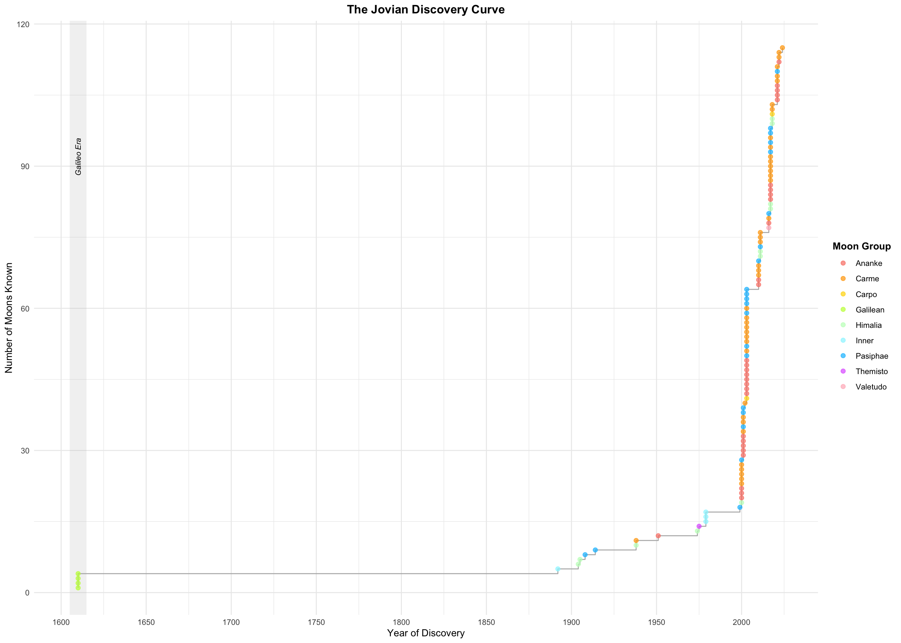
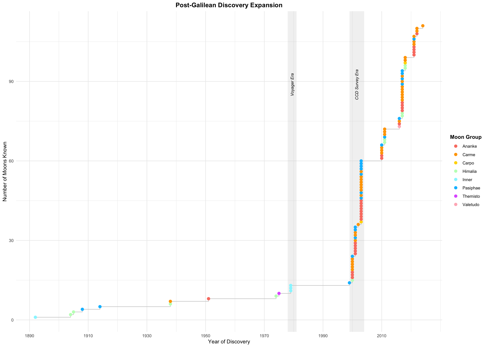
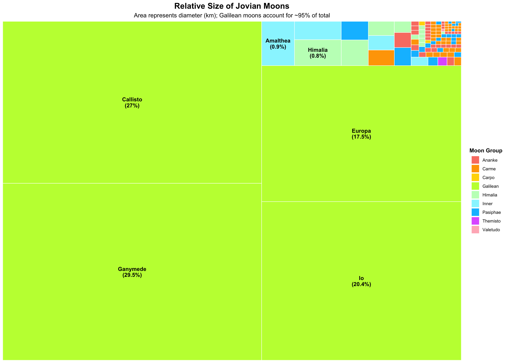
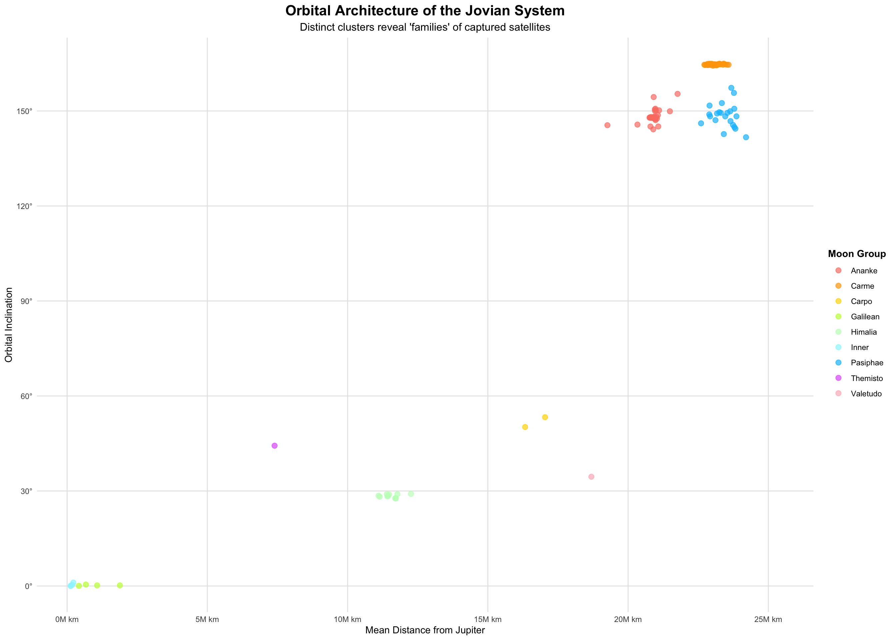
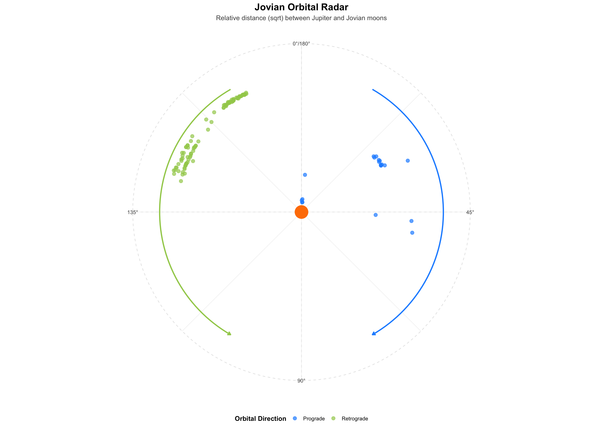
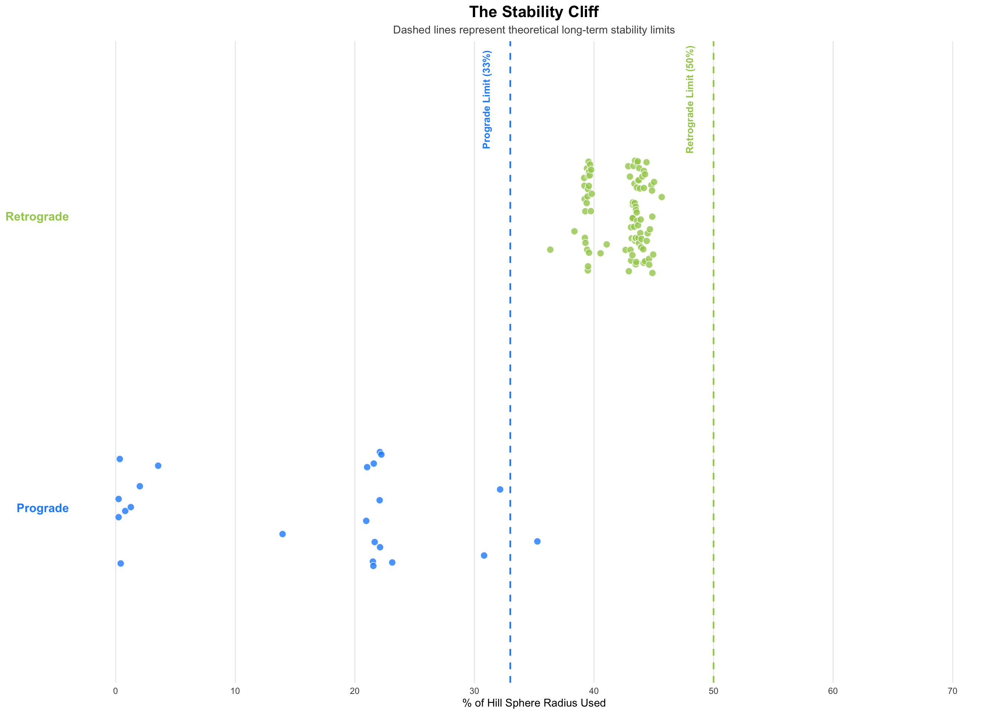

Jupiter, the largest planet in the solar system, possesses an extensive system of natural satellites. These moons range from the four large Galilean satellites - Io, Europa, Ganymede, and Callisto - to dozens of smaller irregular bodies discovered over the past century. Together they form one of the most complex satellite systems in planetary science. The regular inner moons are thought to have formed within a circumplanetary disk during Jupiter’s early formation, while many of the outer moons are believed to be captured objects, likely originating as asteroids or fragments from earlier collisions.
The orbital structure of this system reflects a mixture of formation processes and long-term gravitational interactions. The Galilean moons occupy nearly circular, low-inclination orbits close to Jupiter, consistent with formation in a disk. In contrast, many outer satellites follow distant, eccentric, and highly inclined paths that cluster into groups known as dynamical families, such as the Ananke, Carme, and Pasiphae groups. These families are thought to represent fragments of larger captured bodies that were later disrupted by collisions.
This project examines the distribution and characteristics of Jupiter’s known moons using data compiled from Wikipedia’s Moons of Jupiter page. By analyzing orbital distance, inclination, and discovery year, we explore how the satellite system is organized and how observational history has shaped the discovery of smaller and more distant moons.
# Load all required packages quietly
suppressMessages({
library(tidyverse)
library(rvest)
library(janitor)
library(treemapify)
})The dataset for this analysis is obtained from the Wikipedia page containing the main table of Jupiter’s moons. The scraper downloads the page, identifies the primary table with the “wikitable” class, and converts it into a structured dataframe. Because the raw table contains non-numeric characters - such as citation brackets, uncertainty symbols, and directional suffixes - the data are cleaned using regular expressions to extract numeric values where appropriate. Column names are standardized and text fields are trimmed of extra whitespace.
After cleaning, the dataset contains key attributes for each moon, including name, discovery year, orbital semi-major axis, eccentricity, inclination, and estimated radius. These variables provide a consistent, analysis-ready format for examining the structure of Jupiter’s satellite system and the clustering of irregular moons into dynamical families.
# ---- 1. Fetch the page ----
url <- "https://en.wikipedia.org/wiki/Moons_of_Jupiter"
page <- read_html(url)
all_tables <- page %>% html_elements("table.wikitable")
correct_idx <- which(str_detect(html_text(all_tables), "Semi-major"))[1]
# ---- 2. Parse raw table ----
raw_df <- all_tables[[correct_idx]] %>%
html_table(fill = TRUE) %>%
clean_names()
# ---- 3. Map columns with explicit units ----
jupiter_moons <- raw_df %>%
transmute(
name = .[[2]],
abs_mag = .[[5]],
diameter_km = .[[6]], # unit: km
mass_10e15_kg = .[[7]], # unit: 10^15 kg
semi_major_axis_km = .[[8]], # unit: km
orbital_period_days = .[[9]], # unit: days
inclination_deg = .[[10]], # unit: degrees
eccentricity = .[[11]],
year_raw = .[[12]],
group = .[[15]]
) %>%
# ---- 4. Final data polish ----
mutate(
# Strip footnotes and symbols like † from names and groups
name = str_trim(str_remove_all(as.character(name), "\\[.*?\\]|[†‡§*♠♥♦♣±]")),
group = str_trim(str_remove_all(as.character(group), "\\[.*?\\]")),
# Fix the "lost moon" year issue (e.g., 19752000 -> 1975)
discovery_year = as.numeric(str_extract(as.character(year_raw), "\\d{4}")),
# Clean numeric columns: remove "~", "+", "<", and commas
across(c(abs_mag, diameter_km, mass_10e15_kg, semi_major_axis_km,
orbital_period_days, inclination_deg, eccentricity),
~as.numeric(str_extract(str_replace_all(as.character(.), "[^0-9.-]", ""), "-?\\d+\\.?\\d*")))
) %>%
select(-year_raw) %>%
filter(!is.na(name), !is.na(discovery_year), !name %in% c("Name", "Proper name"))
# Preview results
glimpse(jupiter_moons)## Rows: 115
## Columns: 10
## $ name <chr> "Metis", "Adrastea", "Amalthea", "Thebe", "Io", "E…
## $ abs_mag <dbl> 10.5, 12.0, 7.1, 9.0, -1.7, -1.4, -2.1, -1.2, 13.3…
## $ diameter_km <dbl> 43.46040, 16.52016, 167.22501, 98.51170, 3642.6000…
## $ mass_10e15_kg <dbl> 1.239000e+02, 2.000000e+00, 2.096400e+03, 7.000000…
## $ semi_major_axis_km <dbl> 128000, 129000, 181366, 221889, 421700, 670900, 10…
## $ orbital_period_days <dbl> 0.2959706, 0.2994711, 0.4990116, 0.6753161, 1.7693…
## $ inclination_deg <dbl> 0.06000, 0.03000, 0.37400, 1.07600, 0.05076, 0.470…
## $ eccentricity <dbl> 0.0002, 0.0015, 0.0032, 0.0175, 0.0040, 0.0090, 0.…
## $ group <chr> "Inner", "Inner", "Inner", "Inner", "Galilean", "G…
## $ discovery_year <dbl> 1979, 1979, 1892, 1979, 1610, 1610, 1610, 1610, 19…The discovery of Jupiter’s satellites has not occurred at a steady pace. Instead, it reflects periods of limited progress followed by bursts of new discoveries associated with improvements in observational technology. The first major milestone occurred in 1610, when Galileo Galilei used one of the earliest telescopes to identify the four large moons now known as Io, Europa, Ganymede, and Callisto. These bodies, commonly referred to as the Galilean moons, provided the first clear example of objects orbiting a planet other than Earth.
For the next several centuries, only a small number of additional moons were identified. Observations during this period were constrained by the limitations of early telescopes and by Jupiter’s strong glare, which makes faint nearby objects difficult to detect. As a result, the known satellite population expanded slowly until the development of more advanced optical instruments and imaging techniques in the twentieth century.
# ---- 1. Define master palette ----
jupiter_palette <- c(
"Ananke" = "salmon",
"Carme" = "orange",
"Carpo" = "gold",
"Galilean" = "olivedrab1",
"Himalia" = "darkseagreen1",
"Inner" = "cadetblue1",
"Pasiphae" = "deepskyblue1",
"Themisto" = "mediumorchid1",
"Valetudo" = "lightpink"
)
# ---- 2. Prepare the timeline data ----
timeline_data <- jupiter_moons %>%
arrange(discovery_year) %>%
mutate(total_to_date = row_number())
modern_moons <- jupiter_moons %>%
filter(discovery_year >= 1800) %>%
arrange(discovery_year) %>%
mutate(modern_count = row_number())
# ---- 3. Plot full history ----
ggplot(timeline_data, aes(x = discovery_year, y = total_to_date)) +
# Galileo Era (1605-1615)
annotate("rect", xmin = 1605, xmax = 1615, ymin = -Inf, ymax = Inf, alpha = 0.2, fill = "grey") +
annotate("text", x = 1610, y = max(timeline_data$total_to_date) * 0.8,
label = "Galileo Era", angle = 90, size = 3, fontface = "italic") +
geom_step(color = "grey70", linewidth = 0.5) +
geom_point(aes(color = group), size = 2, alpha = 0.7) +
# Map the manual colors to the points
scale_color_manual(values = jupiter_palette) +
scale_x_continuous(breaks = seq(1600, 2025, 50)) +
labs(
title = "The Jovian Discovery Curve",
x = "Year of Discovery",
y = "Number of Moons Known",
color = "Moon Group"
) +
theme_minimal() +
theme(
plot.title = element_text(hjust = 0.5, face = "bold"),
plot.subtitle = element_text(hjust = 0.5),
legend.position = "right",
legend.title = element_text(hjust = 0.5, face = "bold")
)
The modern period of satellite discovery reflects a shift from traditional visual observation to digital imaging and computational analysis. Spacecraft observations during the Voyager missions in 1979 and 1981 identified several small inner satellites associated with Jupiter’s ring system. These objects are difficult to observe from Earth because they lie close to the bright planetary disk.
Later surveys in the late 1990s and early 2000s used charge-coupled device (CCD) detectors to conduct wide-field imaging searches around Jupiter. The higher sensitivity of these instruments allowed astronomers to identify dozens of small irregular satellites at large orbital distances and high inclinations. More recent discoveries have relied on computational methods such as “shift-and-stack” image processing, which combines multiple exposures to detect extremely faint objects that would otherwise remain hidden in background noise. The resulting increases in discovery counts primarily reflect improvements in detection capability rather than changes in the Jovian system itself.
# ---- 4. Plot modern history ----
ggplot(modern_moons, aes(x = discovery_year, y = modern_count)) +
# Voyager Era (1979-1980)
annotate("rect", xmin = 1978, xmax = 1981, ymin = -Inf, ymax = Inf, alpha = 0.2, fill = "grey") +
annotate("text", x = 1979.5, y = max(modern_moons$modern_count) * 0.8,
label = "Voyager Era", angle = 90, size = 3, fontface = "italic") +
# CCD Survey Era (2000-2003)
annotate("rect", xmin = 1999, xmax = 2004, ymin = -Inf, ymax = Inf, alpha = 0.2, fill = "grey") +
annotate("text", x = 2001.5, y = max(modern_moons$modern_count) * 0.8,
label = "CCD Survey Era", angle = 90, size = 3, fontface = "italic") +
geom_step(color = "grey80") +
geom_point(aes(color = group), size = 2.5) +
# Map the manual colors to the points
scale_color_manual(values = jupiter_palette) +
scale_x_continuous(breaks = seq(1890, 2025, 20)) +
labs(
title = "Post-Galilean Discovery Expansion",
x = "Year of Discovery",
y = "Number of Moons Known",
color = "Moon Group"
) +
theme_minimal() +
theme(
plot.title = element_text(hjust = 0.5, face = "bold"),
plot.subtitle = element_text(hjust = 0.5),
legend.position = "right",
legend.title = element_text(hjust = 0.5, face = "bold")
)
Although the number of known Jovian satellites has grown substantially in recent decades, most of the system’s physical mass remains concentrated in a small number of large bodies. The four Galilean moons - Ganymede, Callisto, Io, and Europa - dominate the system in terms of size. When the diameters of all known moons are compared, these four objects account for the vast majority of the total cumulative diameter represented in the dataset.
In contrast, the numerous irregular satellites discovered during modern surveys are extremely small by comparison. Groups such as the Ananke, Carme, and Pasiphae families contain many individual objects, but each satellite contributes only a small fraction of the system’s overall scale. As a result, the Jovian satellite system consists of a small number of large moons surrounded by a much larger population of minor bodies.
# ---- 1. Prepare data with percentages and sorting ----
size_data <- jupiter_moons %>%
# Sort so largest moons appear first
arrange(desc(diameter_km)) %>%
mutate(
# Calculate percentage of total diameter
pct = (diameter_km / sum(diameter_km, na.rm = TRUE)) * 100,
# Create a new label that includes the name and percentage
# Only moons > 100km
label = ifelse(diameter_km > 100,
paste0(name, "\n(", round(pct, 1), "%)"),
"")
)
# ---- 2. Plot ----
ggplot(size_data, aes(area = diameter_km, fill = group, label = label)) +
geom_treemap(color = "white", size = 1) +
# Text layer: grow = FALSE keeps the font size consistent
geom_treemap_text(
colour = "black",
place = "centre",
grow = FALSE,
size = 11,
fontface = "bold"
) +
# Apply manual color palette
scale_fill_manual(values = jupiter_palette, na.value = "grey70") +
labs(
title = "Relative Size of Jovian Moons",
subtitle = "Area represents diameter (km); Galilean moons account for ~95% of total",
fill = "Moon Group"
) +
theme_minimal() +
theme(
plot.title = element_text(hjust = 0.5, face = "bold", size = 16),
plot.subtitle = element_text(hjust = 0.5, size = 12),
legend.position = "right",
legend.title = element_text(hjust = 0.5, face = "bold")
)
The spatial distribution of Jupiter’s satellites provides insight into the structure and history of the system. When the moons are plotted by semi-major axis and orbital inclination, several distinct clusters become visible. The regular satellites - including the inner moons and the Galilean group - occupy nearly circular orbits close to the planet with very low inclinations, generally between 0° and 1°. These orbital properties are consistent with formation within a circumplanetary disk during Jupiter’s early development. At greater distances from the planet lies a large population of irregular satellites with much higher inclinations and more eccentric orbits.
These irregular satellites are often classified according to both orbital direction and dynamical grouping. Prograde groups, such as the Himalia family, orbit in the same direction as Jupiter’s rotation and typically have moderate inclinations. In contrast, a large population of retrograde satellites travels in the opposite direction with inclinations commonly between about 140° and 160°. Within this outer region, several clusters - including the Ananke, Carme, and Pasiphae groups - contain moons with very similar orbital parameters. These similarities suggest that each group likely originated from a larger captured object that later fragmented through collisional processes. As a result, much of the current satellite population represents families of smaller bodies produced from the breakup of earlier parent objects.
ggplot(jupiter_moons, aes(x = semi_major_axis_km / 1e6, y = inclination_deg, color = group)) +
geom_point(size = 2.5, alpha = 0.7) +
# Apply master color palette
scale_color_manual(values = jupiter_palette, na.value = "grey70") +
# Axis formatting
scale_x_continuous(
labels = function(x) paste0(x, "M km"),
expand = expansion(mult = c(0.05, 0.1))
) +
scale_y_continuous(
breaks = seq(0, 180, 30),
labels = function(x) paste0(x, "°")
) +
labs(
title = "Orbital Architecture of the Jovian System",
subtitle = "Distinct clusters reveal 'families' of captured satellites",
x = "Mean Distance from Jupiter",
y = "Orbital Inclination",
color = "Moon Group"
) +
theme_minimal() +
theme(
plot.title = element_text(hjust = 0.5, face = "bold", size = 16),
plot.subtitle = element_text(hjust = 0.5, size = 12),
legend.position = "right",
legend.title = element_text(hjust = 0.5, face = "bold"),
panel.grid.minor = element_blank(),
panel.grid.major = element_line(color = "grey90")
)
The Jovian satellite system includes moons with a wide range of orbital distances and directions. Satellites located close to Jupiter generally follow prograde orbits, meaning they move in the same direction as the planet’s rotation. These moons remain strongly bound to the planet and typically occupy low-inclination orbits near the equatorial plane. At larger orbital distances, however, the gravitational influence of the Sun becomes increasingly important. In this outer region, the long-term stability of a satellite’s orbit depends in part on its direction of motion relative to Jupiter’s orbit around the Sun.
Retrograde satellites - those orbiting in the direction opposite Jupiter’s rotation - are able to remain stable at greater distances from the planet than most prograde satellites. When the system is visualized using a square-root radial scale, this difference becomes clear. The prograde population appears concentrated near the inner region of the system, while many retrograde satellites occupy much more distant orbits extending millions of kilometers from the planet. The distribution of inclinations also shows relatively few moons near 90°, indicating that highly polar orbits are less stable over long time periods. This pattern produces a clear separation between the inner prograde satellites and the more distant retrograde population.
# ---- 1. Prepare radar data ----
jupiter_radar <- jupiter_moons %>%
mutate(
direction = ifelse(inclination_deg < 90, "Prograde", "Retrograde"),
# Square root to show the 'cloud' of retrograde moons
dist_scaled = sqrt(semi_major_axis_km)
)
# ---- 2. Plot ----
ggplot(jupiter_radar, aes(x = inclination_deg, y = dist_scaled)) +
# Jupiter at the center
annotate("point", x = 0, y = 0, color = "darkorange1", size = 10) +
# The moons
geom_jitter(aes(color = direction), size = 2.5, alpha = 0.7, width = 3, height = 5) +
# Directional arrows
annotate("segment", x = 15, xend = 75, y = 5200, yend = 5200,
arrow = arrow(length = unit(0.2, "cm")), color = "dodgerblue1", linewidth = 1) +
annotate("segment", x = 165, xend = 105, y = 5200, yend = 5200,
arrow = arrow(length = unit(0.2, "cm")), color = "darkolivegreen3", linewidth = 1) +
# Coordinate system
# Use clip = "off" to prevent the 'removed rows' warning without expanding the scale
coord_polar(theta = "x", clip = "off") +
scale_color_manual(values = c("Prograde" = "dodgerblue1", "Retrograde" = "darkolivegreen3")) +
# Set Y limits to start at 0 (Jupiter)
scale_y_continuous(limits = c(0, 5500), labels = NULL, breaks = NULL) +
# Set X limits to 0-180 to keep the compass geometry
scale_x_continuous(
limits = c(0, 180),
breaks = seq(0, 180, 45),
labels = c("0°", "45°", "90°", "135°", "180°")
) +
labs(
title = "Jovian Orbital Radar",
subtitle = "Relative distance (sqrt) between Jupiter and Jovian moons",
x = NULL, y = NULL,
color = "Orbital Direction"
) +
theme_minimal() +
theme(
plot.title = element_text(hjust = 0.5, face = "bold", size = 16),
plot.subtitle = element_text(hjust = 0.5, size = 11, color = "grey30"),
legend.title = element_text(face = "bold"),
legend.position = "bottom",
panel.grid.major = element_line(color = "grey90", linetype = "dashed")
)
Although Jupiter’s gravitational influence extends over a large region of space, it is limited by the competing gravitational pull of the Sun. The region within which a planet’s gravity dominates over solar tidal forces is known as the Hill sphere. For Jupiter, this region extends to a radius of roughly 53 million kilometers. However, satellites located near the outer portion of this region are not necessarily stable over long time periods. Because the Sun continuously perturbs distant objects, long-term orbital stability is limited to a smaller fraction of the total Hill sphere radius.
When the orbital distances of Jupiter’s moons are expressed as a percentage of the Hill sphere radius, a clear difference appears between prograde and retrograde satellites. Prograde moons are typically confined to the inner portion of the system, generally within about one-third of the Hill sphere. At greater distances, solar perturbations gradually destabilize prograde orbits. Retrograde satellites, by contrast, can remain stable farther from the planet. Many occupy orbits approaching roughly half of the Hill sphere radius. This difference in stability helps explain why the most distant Jovian satellites belong primarily to retrograde dynamical families.
# ---- 1. Hill Sphere radius for Jupiter ----
hill_sphere_km <- 53000000
jupiter_stability <- jupiter_moons %>%
mutate(
direction = ifelse(inclination_deg < 90, "Prograde", "Retrograde"),
# Calculate percentage of Hill Sphere
pct_hill = (semi_major_axis_km / hill_sphere_km) * 100
)
# ---- 2. Plot ----
ggplot(jupiter_stability, aes(x = pct_hill, y = direction, fill = direction)) +
# The Data
geom_jitter(shape = 21, size = 3, color = "white", alpha = 0.8, height = 0.2) +
# Vertical 'Cliff' Lines
geom_vline(xintercept = 33, linetype = "dashed", color = "dodgerblue1", linewidth = 0.8) +
geom_vline(xintercept = 50, linetype = "dashed", color = "darkolivegreen3", linewidth = 0.8) +
# Labels for the stability limits
annotate("text", x = 31, y = 2.4, label = "Prograde Limit (33%)",
angle = 90, color = "dodgerblue1", size = 3.5, fontface = "bold") +
annotate("text", x = 48, y = 2.4, label = "Retrograde Limit (50%)",
angle = 90, color = "darkolivegreen3", size = 3.5, fontface = "bold") +
# Formatting
scale_fill_manual(values = c("Prograde" = "dodgerblue1", "Retrograde" = "darkolivegreen3")) +
scale_x_continuous(limits = c(0, 70), breaks = seq(0, 70, 10)) +
labs(
title = "The Stability Cliff",
subtitle = "Dashed lines represent theoretical long-term stability limits",
x = "% of Hill Sphere Radius Used",
y = NULL
) +
theme_minimal() +
theme(
plot.title = element_text(face = "bold", size = 16, hjust = 0.5),
plot.subtitle = element_text(size = 11, color = "grey30", hjust = 0.5),
# Color-coded axis labels
axis.text.y = element_text(color = c("dodgerblue1", "darkolivegreen3"),
face = "bold", size = 12),
legend.position = "none",
panel.grid.minor = element_blank(),
panel.grid.major.y = element_blank()
)